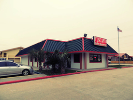

Our Location
Tuscany Italian Restaurant Baytown
Address: 4915 East Fwy
Baytown, Texas 77521
Phone: 281-421-5555
Email: info@tuscanyitalian
restaurantbaytown.com
Hours
Tues-Wed: 11AM - 9PM
Thu-Sat 11AM - 10PM
Sun 11AM - 9PM

Come taste the difference at Tuscany's Italian Restaurant! Our menu is full of delicious classics, right out of Italy.